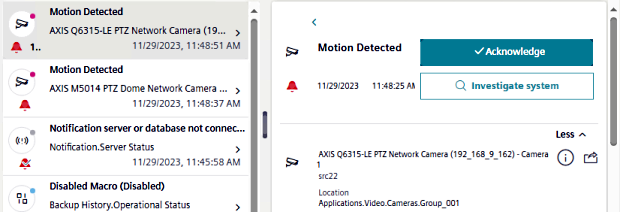
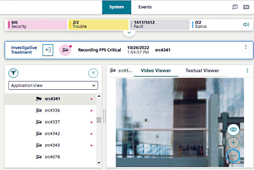
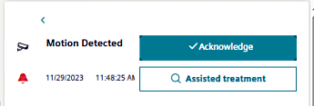
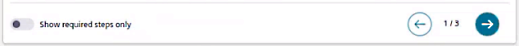
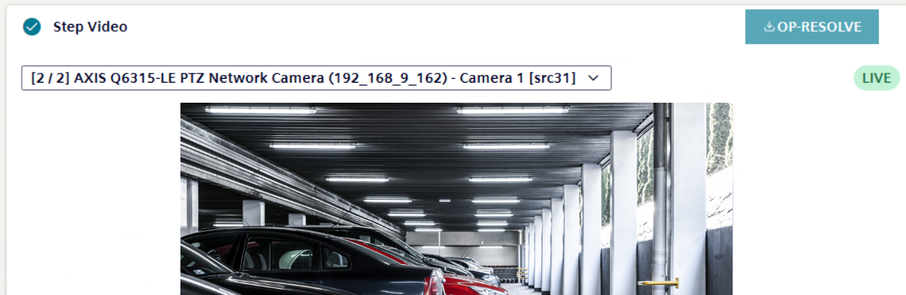

Handle Events with Video
When you select an event in Event List, depending on configuration either an Investigate system or Assisted treatment button is available in the event details pane.
Check Video Related to an Event
You can use investigative treatment to quickly check the video related to an event.
- In the top navigation bar, select Events.
- From the list of events, select the event of interest.
- Details of the event display on the right-hand side.

- Select Investigate system.
- The Flex application switches back to System, with the event source automatically selected in System Browser.
- If the event source was a camera, its images are automatically displayed in the primary pane.

- For other types of event source, you can access any related video from the right sidebar (see also, Check Cameras Related to a Point):
- Select the camera icon on the sidebar.
- Select the desired camera link.
Check Video in Assisted Treatment of an Event
In case of an event for which an assisted treatment procedure with video is configured, you can view the relevant images directly within the video step.
- In the top navigation bar, select Events.
- From the list of events, select the event of interest.
- Details of the event display on the right-hand side. If an assisted treatment procedure was configured for the event, you will see an Assisted treatment button in place of the Investigate system button.

- Select Assisted treatment.
- The Assisted treatment procedure displays under the event details.
- You can navigate through the procedure steps using the left and right arrows at the top.

- Once you reach a video step, images from the first relevant camera are displayed within the step itself.
If there are multiple relevant cameras you can: - Scroll through them using the next/previous controls on either side of the image.
- Select a specific camera from the drop-down list.

NOTE:Playback of recorded video is not supported on Flex Client. The Video step will always show live images from the relevant cameras.